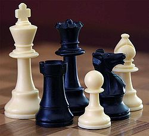

En todo juego es importante conocer el reglamento:
Indicaciones sobre el reglamento de juego
1. Acomodo de piezas durante el partido:
El jugador al que le toca mover puede acomodar las piezas en sus casillas, pero antes debe avisarle a su rival, diciendo claramente "acomodo", "compongo" u otra frase similar.
2. Pieza propia tocada, pieza movida:
Si el jugador no avisó que quería acomodar, está obligado a mover la primera pieza propia que tocó. Aunque suelte la pieza sin haberla sacado de la casilla en la que estaba ya no podrá mover otra pieza en esa jugada. Tiene que volver a tomarla y moverla obligatoriamente.
3. Pieza soltada, jugada terminada:
Cuando el jugador suelta la pieza no puede cambiarla de lugar. Si apoya la pieza en una casilla libre sin soltarla de su mano, puede correrla a otra casilla, pero no puede mover ninguna otra pieza.
4. Pieza contraria tocada, pieza comida:
Si con una pieza propia en su mano, el jugador toma una pieza contraria o la desplaza de su casilla, está obligado a comerla, aunque no la haya soltado. Si toma una pieza contraria antes de tomar una pieza propia está obligado a comerla, pero si tiene más de una pieza propia para comerla, puede elegir con cuál hacerlo.
5. Reclamos:
Todos los reclamos por incorrecciones en el juego del rival deben ser realizados por el jugador inmediatamente de producidas, antes de realizar su próxima jugada. Las incorrecciones anteriores que hayan sido toleradas no dan derecho a cometer las mismas u otras incorrecciones posteriores para compensarlas.
6. Jugadas ilegales o imposibles:
Las obligaciones de comer o de mover señaladas anteriormente no tiene validez si no hay ninguna forma reglamentaria de realizarlas. Toda jugada ilegal o imposible debe rectificarse realizando otra jugada:
a) Si se hizo con una pieza que tiene otras posibilidades de movimiento el jugador debe realizar con esa misma pieza otra jugada lícita y no puede mover otra pieza.
b) Si se hizo con una pieza que no tiene otra posibilidad de movimiento legal, el jugador puede mover cualquier otra pieza.
Si la jugada ilegal se descubre después de varias jugadas debe reestablecerse la posición anterior a ésta. Si no puede restablecerse la posición la partida se anula.
7. Errores de colocación:
Si el tablero está mal colocado debe pasarse la posición a un tablero bien colocado y continuar. Si había piezas mal colocadas en la posición inicial la partida se anula.
8. No se debe molestar al rival:
Está prohibido molestar o distraer al rival de cualquier forma. No se deben hacer comentarios ni gestos respecto a las jugadas propias ni a las del contrario.
9. Nadie debe intervenir en la partida:
Los jugadores no deben pedir consejos u opiniones de terceros ni consultar apuntes.
Los observadores no pueden hacer comentarios que puedan ser oídos por los jugadores. No deben intervenir aunque observen jugadas imposibles. Tampoco deben avisar la caída de la aguja del reloj.
10. Tablas en partidas con reloj:
Además de las condiciones mencionadas, la partida es tablas cuando:
1) ambas agujas han caído sin que ningún jugador lo advierta, y no se puede determinar cuál cayó primero,
2) a un jugador se le cae la aguja y su rival no tiene material suficiente para dar mate,
3) un jugador reclama tablas al árbitro, antes de que se caiga su aguja, en finales parejas como por ejemplo: Dama y Rey contra Dama y Rey.